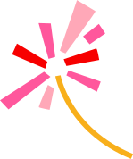
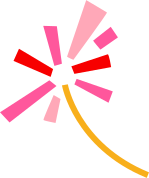

ТАСС сообщил о сценариях обновления Старицы
На днях молодые архитекторы из Школы дизайна НИУ ВШЭ презентовали местным властям и бизнесу результаты исследования городской среды Старицы и предложили актуальные сценарии ее развития. В том числе — оформить центр города на набережной левого берега Волги, наполнить город арт-объектами и на входе в пещеру со «старицким мрамором» сделать городской сад. Об этом 8 марта сообщил ТАСС.
Старицу, основанную в 1297 году, планируют сделать новым туристическим магнитом федерального уровня. Последние годы Старицкий округ активно развивается: в 2024 году он принял 105 тыс. человек. «Новый город» в рамках развития туристического комплекса «Старицкий посад» восстановит в городе более десятка руинированных зданий. В течение ближайших лет здесь откроются отели, которые смогут принимать 30 тыс. туристов в год, появятся новые рестораны, выставочные пространства, торговые площади для местных промыслов, будет создано 300 новых рабочих мест.
Результаты анализа городской среды, которые представили молодые архитекторы, показали, что Старица развивается и имеет большой туристический потенциал. Так, студенты отметили, что с начала 10-х гг. город активно развивается, что отразилось в позитивной динамике индекса «Качество городской среды» — в 2023 году Старица получила 206 баллов, в то время как в 2019 году было всего 184 балла. Детальный анализ показал, что Старице нужен «светский» центр города, на эту роль лучше всего подходит набережная левого берега Волги. Ключевые видовые здания вдоль променада стоят в руинах и утратили свою функцию. Это бывшая швейная фабрика и торговые палаты купца Филиппова — они войдут в новый комплекс «Старицкий посад», за который отвечает компания «Новый город».
Теперь молодые архитекторы приступают к созданию дипломных работ — проектов ревитализации и организации среды по предложенным им объектам, в том числе ансамблю в старицком Зарядье и входу в каменоломни со стороны деревни Сельцо.
В июне магистранты НИУ ВШЭ под руководством известного архитектора Владимира Кузьмина снова приедут в Старицу. Их идеи лягут в основу реальных технических заданий для профессиональных архитектурных бюро, задействованных в городе.